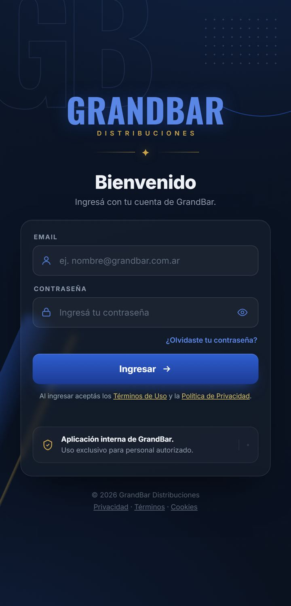
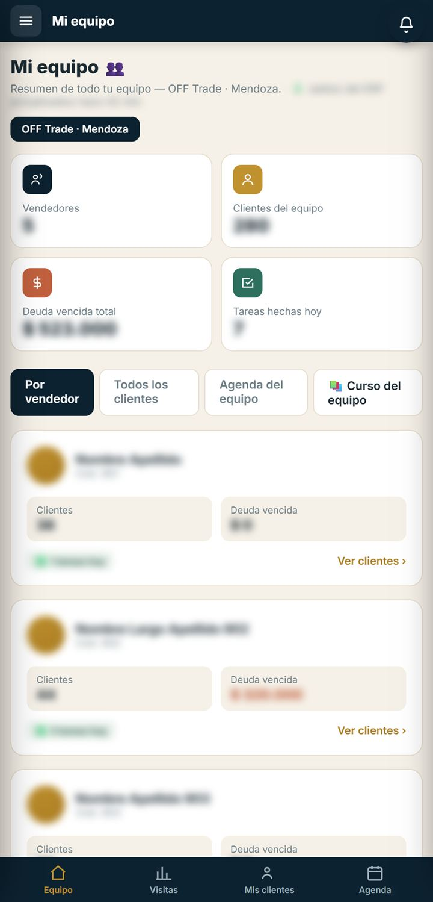
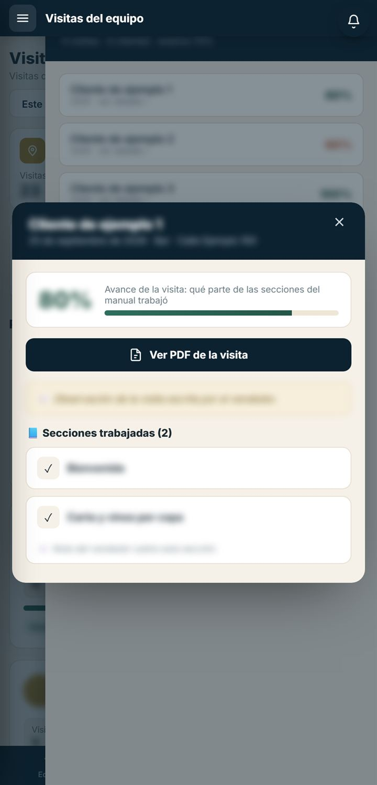
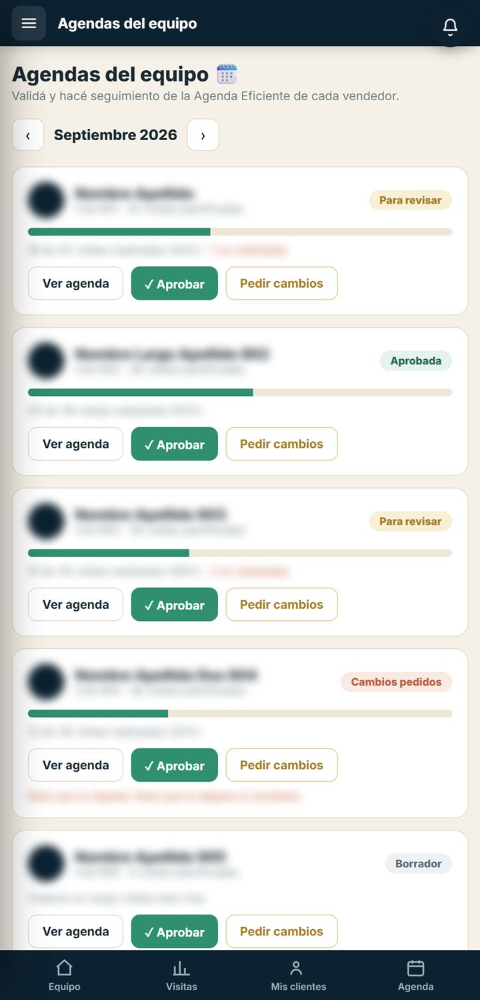
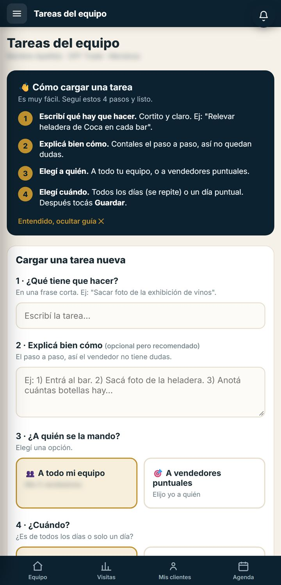
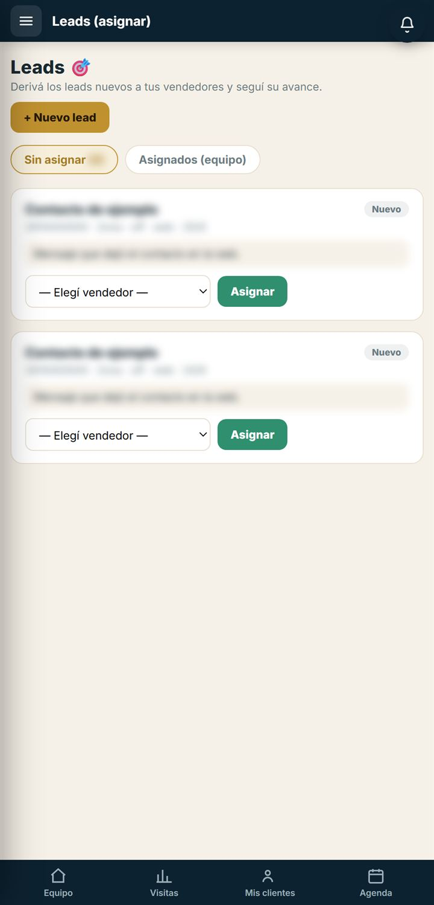
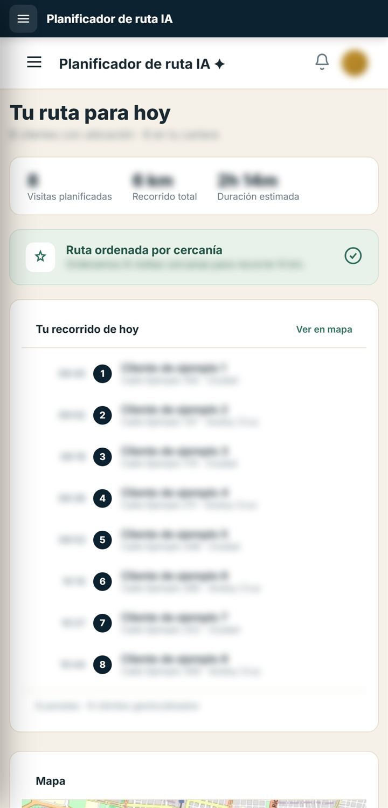
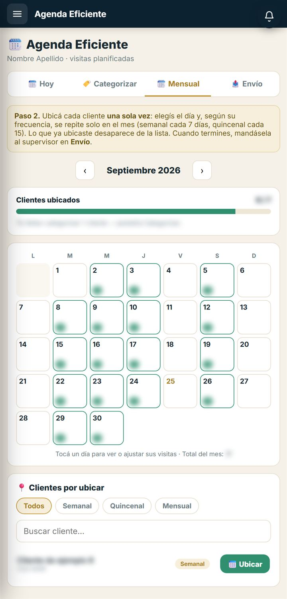
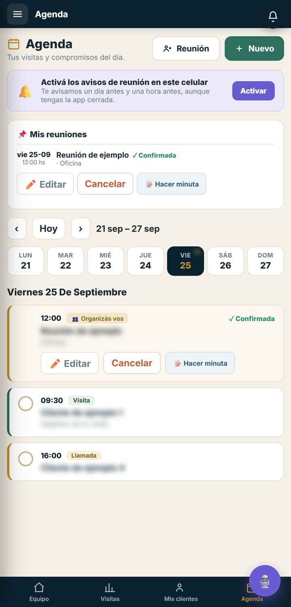

Cómo seguir a tu equipo desde el Portal (visitas, agendas, tareas, clientes, pedidos de acción y leads) y cómo trabajar tu propia cartera, pantalla por pantalla.
Para supervisores de Mendoza y San LuisVersión septiembre 2026Ayuda WhatsApp +54 9 261 245-2651
Parte I · Empezar
01
Entrar al portal
Con tu email y tu contraseña de GrandBar, desde el celular o la compu.
Escribí tu contraseña. El ojo del costado la muestra, para que veas si está bien escrita.
Tocá Ingresar →. Entrás directo a Resumen del equipo.
Si te olvidaste la contraseña
Escribí tu email y tocá ¿Olvidaste tu contraseña?. Se abre WhatsApp con soporte, con el pedido ya escrito, y te la restablecen.
Entrar con la huella o con Face ID
La primera vez que entrás desde un celular, el portal pregunta si querés activar el ingreso con huella (en iPhone, con Face ID). Si aceptás, las próximas veces aparece ese botón debajo de o continuá con y entrás sin escribir la contraseña.
Tenerlo a mano como una app
Android (Chrome). Con el portal abierto, tocá los tres puntos de arriba a la derecha y después Agregar a la pantalla principal.
iPhone (Safari). Con el portal abierto, tocá Compartir (el cuadrado con la flecha) y después Agregar a inicio.
Una cuenta por navegador
El navegador guarda una sola sesión del portal. Si en otra pestaña alguien entra con otra cuenta, todas las pestañas pasan a esa cuenta y arriba aparece un aviso para actualizar. Para tener dos cuentas abiertas a la vez, usá otro perfil de Chrome o una ventana de incógnito.

Figura 1 · La pantalla de ingreso de portalgrandbar.com.
Todo el panel está en el menú, ordenado en bloques.
En el celular, el menú se abre con el botón de las tres rayas, arriba a la izquierda. En la compu está siempre a la izquierda. Es el mismo en todas las pantallas del panel.
Mi equipo
Resumen del equipo, Visitas, Agendas, Tareas, Clientes del equipo, Pedidos de acción, Leads, Curso y Torneo Doña Paula.
Mis ventas
Tu trabajo como vendedor: Mi inicio, Mis clientes, Mis leads, Planificador de ruta IA, Agenda eficiente, Cobranzas y Herramientas de venta.
Lo mío
Mi agenda, Mis tareas y Mis reportes.
Ayuda
Guía del panel: abre esta guía en otra pestaña.
En las pantallas de Mi equipo, el celular muestra además una barra abajo con los cuatro accesos más usados: Equipo, Visitas, Mis clientes y Agenda.
La campanita
Está arriba a la derecha. El número rojo cuenta los avisos nuevos y se actualiza solo cada minuto. Tocá un aviso para ir a la pantalla que corresponde. Te avisa, por ejemplo, cuando un vendedor te manda su agenda del mes, cuando te asignan un lead o cuando te invitan a una reunión.
Cerrar sesión
Tocá tu nombre, abajo del menú, y después Cerrar sesión. Hacelo siempre que uses un celular o una compu que no sea tuya.
Es la primera pantalla que ves al entrar: cómo está tu equipo hoy.
Arriba dice tu canal y tu zona (por ejemplo, OFF Trade · Mendoza) y hace cuánto se actualizaron los saldos del sistema de la empresa.
Qué hay en la pantalla
Los cuatro números del equipo: vendedores, clientes, deuda vencida total y tareas hechas hoy.
Las pestañas. Por vendedor muestra una tarjeta por vendedor. Todos los clientes lista los clientes del equipo con saldo, vencido y teléfono; se busca por nombre, código, vendedor o dirección. Agenda del equipo dice, por vendedor, cuántos compromisos tiene hoy, próximos y pendientes. Curso del equipo lleva a la sección 10.
La tarjeta de cada vendedor: sus clientes, su deuda vencida y las tareas que hizo hoy. Tocala para ver sus clientes con la deuda vencida de cada uno.
La barra de abajo, con los cuatro accesos que más vas a usar.
Armar la agenda de un vendedor
Tocá la tarjeta del vendedor y después Armar su agenda. También está en la pestaña Agenda del equipo, en Armar agenda.
Se abre la agenda con el aviso “Le estás armando la agenda a…”. Tocá + Nuevo y elegí el tipo: visita, reunión, llamada o tarea.
Completá el cliente o lugar y la fecha (la hora y el objetivo son opcionales) y tocá Guardar. El vendedor lo ve en su agenda del celular.
Para tener en cuenta
Vos también aparecés en la lista del equipo, porque también vendés.

1234
Figura 3 · Resumen del equipo. Los nombres y los montos están difuminados.
Arriba elegí el período: este mes, el mes pasado, los últimos tres meses o todo el historial.
Mirá los totales del equipo: visitas, clientes visitados, el avance promedio y cuántos vendedores son.
Cada vendedor tiene su tarjeta, de más a menos visitas. Tocá Ver detalle para ver sus visitas con la fecha y el avance de cada una.
Tocá una visita para abrirla: está el PDF de la visita (si el vendedor lo guardó), sus observaciones y las secciones del manual que trabajó, con lo que anotó en cada una.
Qué es el avance
Es qué parte de las secciones del manual trabajó el vendedor en esa visita.

Figura 4 · El detalle de una visita, con su avance y las secciones trabajadas.
Cada vendedor arma su agenda del mes en Agenda eficiente y te la manda para que la valides.
Cuando una agenda llega, te avisa la campanita.
Qué hay en la pantalla
El mes. Se cambia con las flechas.
La tarjeta de cada vendedor: visitas planificadas, el estado de la agenda y el avance (cuántas visitas ya hizo y cuántas no se realizaron).
Los botones para revisarla.
Revisar una agenda
Tocá Ver agenda: se abre el calendario del mes. Tocá un día para ver a quién visita, si la visita se hizo (con los minutos que duró) o si no se realizó (con el motivo).
Si está bien, tocá ✓ Aprobar.
Si hay que corregir algo, tocá Pedir cambios y escribí qué necesita. Al vendedor le llega el aviso con tu nota.
Estados
Borrador
El vendedor la está armando y todavía no te la mandó.
Para revisar
Te la mandó y espera tu validación.
Aprobada
Ya la validaste.
Cambios pedidos
Le pediste cambios. Debajo ves la nota que le dejaste.
Para tener en cuenta
En el calendario, + Mi agenda suma esa visita a tu propia agenda (solo la ves vos), por ejemplo para acompañar al vendedor ese día. Tu agenda del mes también aparece en esta lista, y la aprobás vos mismo.

123
Figura 5 · Agendas del equipo, con agendas en distintos estados.
¿Qué tiene que hacer? Una frase corta. Por ejemplo: “Sacar foto de la exhibición de vinos”.
Explicá bien cómo (opcional, pero recomendado): el paso a paso, así el vendedor no tiene dudas.
¿A quién se la mando?A todo mi equipo o A vendedores puntuales, y tildás a quién.
¿Cuándo?Todos los días (se repite cada día hábil) o Un día puntual (elegís la fecha). Tocá Guardar tarea.
Seguimiento
Abajo, en Tus tareas activas · seguimiento de hoy, cada tarea dice cuántos la hicieron hoy. Quitar tarea la saca y deja de aparecerles a los vendedores. Ellos ven la tarea en su pantalla de Tareas y la tildan cuando la hacen.

Figura 6 · Tareas del equipo, con la guía de cuatro pasos y el formulario.
Todos los clientes de tus vendedores, con su deuda.
Qué hay en la pantalla
Cuántos clientes tiene el equipo, las visitas de esta semana (desde el lunes) y las ventas del mes del equipo, de la planilla de Avance Ventas.
Las pestañas Clientes y Quitados.
Los filtros: por deuda (con deuda vencida, con saldo pendiente o al día), por vendedor, y el orden (por nombre, por más deuda vencida o por última visita). Arriba está el buscador.
Cada cliente, con el botón ✕ Quitar.
Tocá un cliente para abrir su ficha: tipo, teléfono, código, vendedor, dirección, saldo actual, deuda vencida, lo vendido acumulado y la última visita. En la ficha también están el historial de visitas, las notas y los botones Llamar y Cómo llegar (abre Google Maps).
Si quitaste un cliente por error
✕ Quitar saca al cliente de la cartera. Usalo solo si el cliente ya no se atiende. Para volver atrás, entrá a Quitados y tocá ↺ Volver a la cartera.
Repartí los contactos nuevos entre tus vendedores.
Un lead es un posible cliente que se contactó con GrandBar. Cada uno muestra su nombre, su estado, el teléfono, la zona, el canal, de dónde llegó, la fecha y el mensaje que dejó.
Entrá a la pestaña Sin asignar (al lado dice cuántos hay).
En cada lead, elegí el vendedor en la lista.
Tocá Asignar. Al vendedor le llega el aviso “Te asignaron un lead nuevo”.
En Asignados (equipo) seguís en qué quedó cada uno.
Estados
NuevoAsignado
Todavía nadie lo contactó.
Contactado
El vendedor ya habló con la persona.
ConvertidoDescartado
Pasó a ser cliente, o no prosperó.
Cargar un lead a mano
Tocá + Nuevo lead, completá el nombre o el teléfono (el resto es opcional: email, zona, canal y la consulta) y tocá Crear lead. Queda en Sin asignar.

Figura 9 · Leads sin asignar, listos para repartir.
Elegí la sucursal: Mendoza o San Luis. Si tenés puntos, también aparece Mi puntaje.
El ranking muestra los puntos de cada vendedor en acciones, volumen y activaciones, y el total. Los tres primeros llevan medalla.
Tocá un vendedor para ver su detalle: puntos totales, su puesto, cuánto le falta para pasar al de arriba, los puntos por categoría y el detalle por concepto. Con el botón de arriba volvés al ranking.
De dónde salen los puntos
Los carga Administración. La pantalla se actualiza cuando cambia su planilla.
Tu día como vendedor, de un vistazo. Estas pantallas son las mismas que usa tu equipo.
Qué hay en la pantalla
Los cuatro números: clientes asignados, visitas de hoy, tareas pendientes y ventas acumuladas.
Tu agenda de hoy, con tus visitas del día. Ver agenda completa abre Agenda eficiente.
El botón Iniciar ruta con IA, que abre el planificador de ruta (sección 15).
El resumen semanal: visitas realizadas, ventas acumuladas y clientes nuevos. Ver reporte completo abre el reporte semanal, que se puede imprimir o guardar en PDF.
Más abajo
Avisos importantes
Compromisos atrasados, visitas pendientes de hoy, tareas sin completar, leads sin contactar y clientes con deuda vencida. Cada aviso te lleva a su pantalla.
Herramientas rápidas
Catálogo de productos, Materiales de venta (con el stock disponible) y Curso de vendedores.
Acciones y promociones activas
Las últimas acciones del catálogo para tu canal. Ver todas abre el catálogo.
Tu mes
Visitas, ventas, clientes con compra y cobertura: qué parte de tu cartera compró este mes.
Curso pendiente
Si todavía no terminaste el curso obligatorio, arriba aparece un aviso que te lleva a completarlo.
Tu cartera, la ficha de cada cliente y cómo registrar una visita.
Es la misma pantalla que Clientes del equipo (sección 7), pero con tu cartera: los números de arriba (clientes asignados, visitas de esta semana y tus ventas del mes), el buscador, los filtros, el orden y la pestaña Quitados funcionan igual.
La ficha del cliente
Resumen
Tipo, teléfono, código, dirección, saldo actual, deuda vencida, lo vendido acumulado y la última visita.
Historial
Sus visitas, de la más nueva a la más vieja.
Notas
Escribí lo que quieras recordar del cliente y tocá Guardar nota.
Llamar y Cómo llegar
Llaman al cliente o abren Google Maps con su dirección.
Agregar visita
Abre tu agenda con el cliente ya cargado, para agendarla.
Para hacer la visita
Entrá a Herramientas de venta y después a App de Vendedores. Entrás directo con tu cuenta, elegís el cliente y recorrés el manual. Al cerrarla, queda en el historial del cliente y en Visitas del equipo.
El recorrido del día, ordenado para hacer menos kilómetros.
Se arma solo al entrar. Toma los clientes de tu cartera que tienen la ubicación cargada, elige hasta 12 que estén cerca entre sí y los ordena para recorrer lo menos posible.
Arriba
Cuántas visitas tiene la ruta, los kilómetros y la duración estimada (15 minutos por visita, más el viaje).
Tu recorrido de hoy
Las paradas en orden, con un horario estimado desde las 8:45, y el mapa con el camino.
Comparación de rutas
Cuántos kilómetros serían en el orden de tu cartera y cuántos ordenada por cercanía.
Iniciar navegación
Abre Google Maps con todas las paradas en ese orden.
Para tener en cuenta
Solo usa la ubicación de los clientes: no tiene en cuenta el tránsito ni sus horarios. Si tus clientes no tienen la ubicación cargada, o no se pudieron leer, la pantalla te lo dice y no arma ninguna ruta.

Figura 13 · La ruta del día, ordenada por cercanía.
Tu agenda del mes: la armás una vez y la app reparte las visitas.
Tiene cuatro pestañas: Hoy, Categorizar, Mensual y Envío.
Categorizar (se hace una sola vez): a cada cliente le ponés su frecuencia de visita: semanal, quincenal o mensual.
Mensual: ubicás cada cliente una sola vez. Elegís el primer día y se repite solo: los semanales cada 7 días y los quincenales cada 15. La barra Clientes ubicados dice cuánto te falta. Tocá un día del calendario para ver o ajustar sus visitas.
Envío: cuando esté lista, tocá Enviar agenda al supervisor. Arriba ves el estado. Si ya está aprobada y tenés que cambiarla, el botón dice Reenviar (hacer cambios).
Hoy: tus visitas del día. ▶ Iniciar visitas (manual) abre el manual, y cada visita que cerrás ahí se tilda sola con su tiempo.
Si no pudiste ir a un cliente
En Hoy, tocá No pude visitar: escribí el motivo y, si querés, pasá la visita a otro día. Queda registrado para la supervisión.
Tu propia agenda
Como también vendés, tu agenda del mes aparece en Agendas del equipo (sección 5): cuando la mandás, la aprobás vos mismo, igual que la de tus vendedores.

Figura 14 · La pestaña Mensual, con el calendario del mes.
Movete por la semana con las flechas y Hoy, y tocá un día para ver sus compromisos.
Tocá + Nuevo y elegí el tipo: visita, reunión, llamada o tarea.
Completá el cliente o lugar y la fecha (la hora y el objetivo son opcionales) y tocá Guardar. Para cambiar o borrar un compromiso, tocalo.
Reuniones con otras personas del portal
Tocá Reunión.
Escribí qué es y el día y, si querés, la hora, el lugar y el detalle (temas, qué llevar, el link de la videollamada).
Sumá a los invitados: buscalos por nombre o elegí un área. Si alguien no está en el portal, usá Otra persona (no está en el Portal). Si no sumás a nadie, es un evento personal: solo lo ves vos.
Guardá. A los invitados les llega el aviso y responden si asisten o no.
Avisos en el celular
Si arriba aparece “Activá los avisos de reunión en este celular”, tocá Activar: te avisa un día antes y una hora antes de cada reunión, aunque tengas la app cerrada.
Minutas
En cada reunión de tu agenda está Hacer minuta: cargás los temas que se hablaron, los pendientes y las notas o acuerdos, y tocás Finalizar y guardar.
Dentro de la minuta, Grabar (durante la reunión) o Subir audio (después, hasta 100 MB): la IA transcribe el audio y completa los temas, los pendientes y las notas. Revisalos y guardá.
Con la minuta guardada, la reunión muestra Ver minuta, Ver resumen (hecho con IA) y Editar. Quedan todas abajo, en Minutas de reuniones.
El botón redondo del micrófono, abajo a la derecha, sirve para hacer la minuta de una reunión que no está en la agenda. Ahí mismo, Mis minutas muestra las que guardaste así.

Figura 16 · Mi agenda, con una reunión confirmada y los compromisos del día.
En Mi inicio, Mis clientes, el planificador de ruta y Herramientas de venta, abajo del menú. Abre WhatsApp con un mensaje que ya dice en qué pantalla estás.
Esta guía
En el menú del panel, Ayuda y después Guía del panel.
Para que te ayuden más rápido, contá en qué pantalla estabas, qué tocaste y qué esperabas que pasara. Si podés, mandá una captura.
Preguntas frecuentes
¿Cómo se arma mi equipo?
Solo, a partir de la zona y el canal de cada vendedor en el portal. Si falta alguien o aparece alguien que no es de tu equipo, avisá a soporte para que revisen su zona y su canal.
¿Por qué aparezco yo en mi equipo?
Porque también vendés: tu cartera, tus visitas y tu agenda cuentan dentro del equipo.
¿Cada cuánto se actualizan los saldos y la deuda?
Salen del sistema de la empresa. En Resumen del equipo dice hace cuánto fue la última actualización. Si un cliente pagó hoy, puede tardar en verse.
¿Cómo se entera un vendedor de que le pedí cambios en la agenda?
Le llega un aviso a la campanita con tu nota. Cuando la corrige, te la vuelve a mandar.
Quité un cliente de la cartera por error. ¿Se puede volver atrás?
Sí. En Clientes, entrá a la pestaña Quitados, buscá el cliente y tocá Volver a la cartera.
¿Puedo tener abierto mi panel y el de otra persona a la vez?
En el mismo navegador, no: guarda una sola cuenta. Usá otro perfil de Chrome o una ventana de incógnito para la segunda cuenta.
Me apareció un aviso de que cambió la cuenta. ¿Qué pasó?
Alguien entró con otra cuenta en otra pestaña del mismo navegador. Actualizá la pantalla, fijate con qué cuenta quedaste y, si no es la tuya, cerrá sesión y volvé a entrar.
Los puntos del torneo no coinciden con lo que esperaba.
Los carga Administración en su planilla y la pantalla muestra exactamente eso. Si hay un error, consultalo con Administración.
¿Funciona en la compu?
Sí. En la compu el menú queda fijo a la izquierda y las pantallas se ven más anchas.
¿Cómo cierro sesión?
Tocá tu nombre, abajo del menú, y después Cerrar sesión.